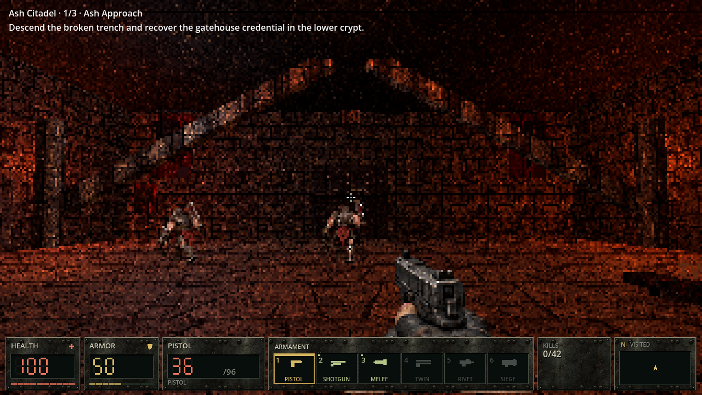
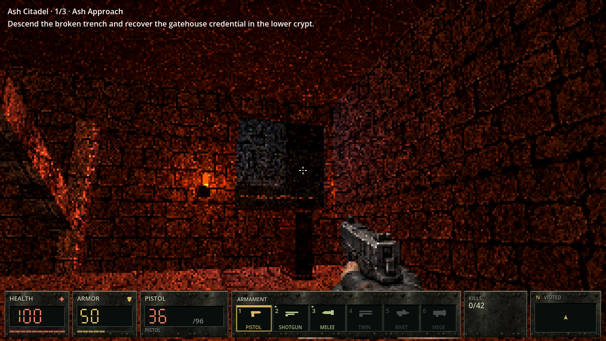
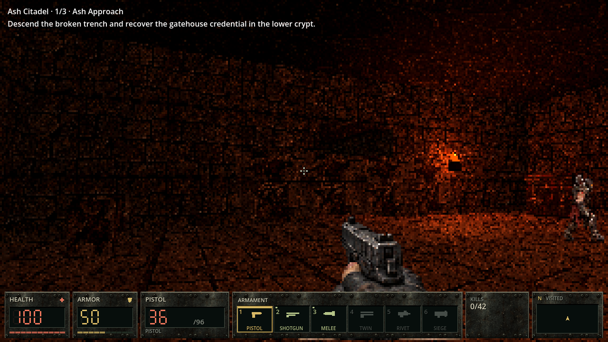
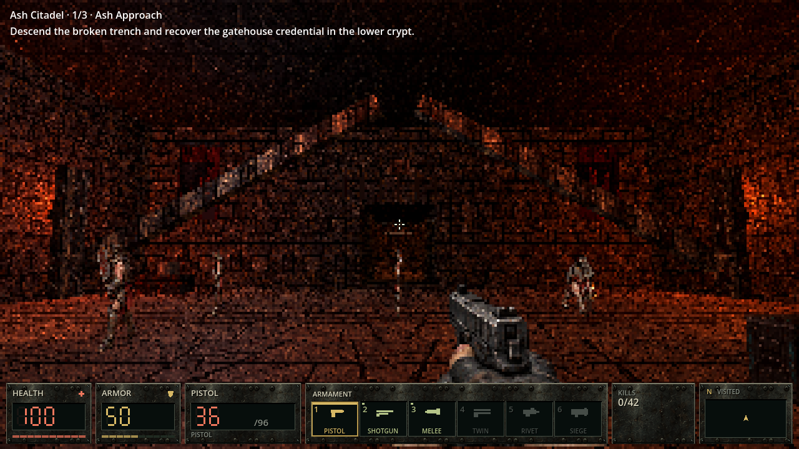
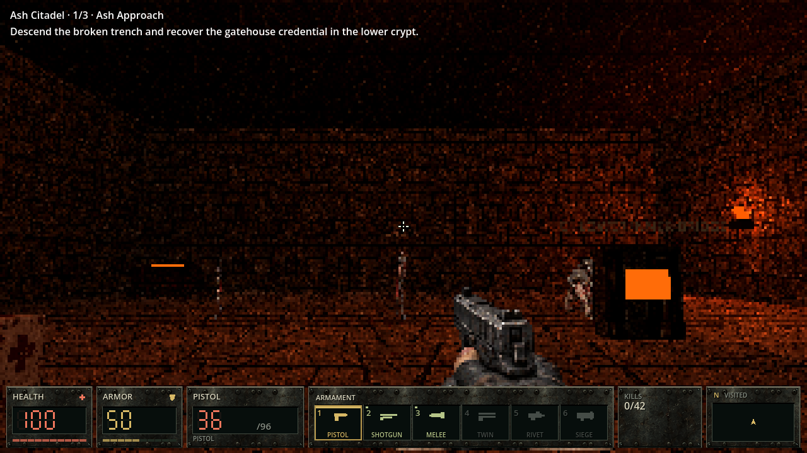
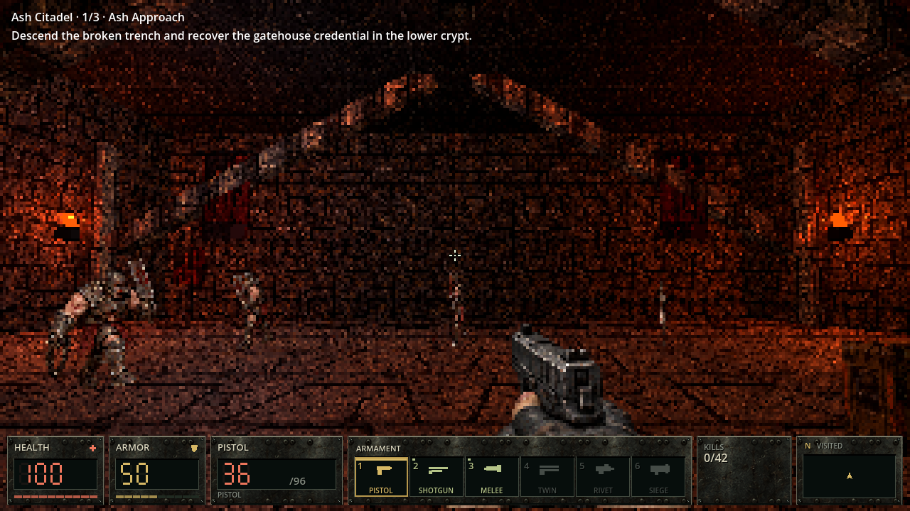
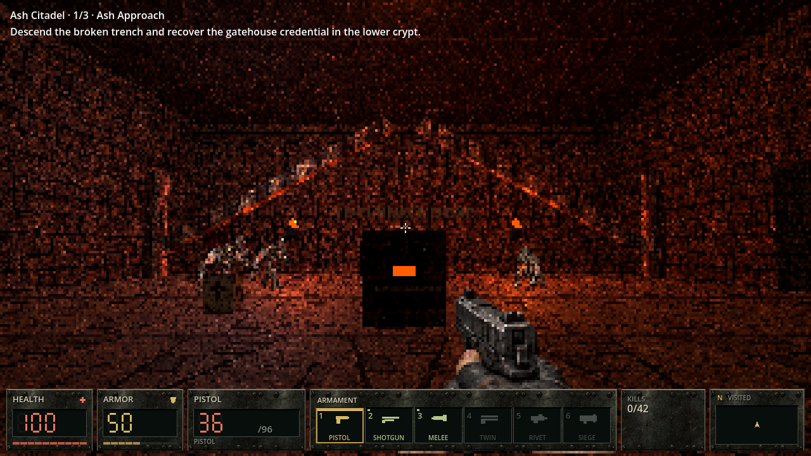

Seven unchanged frames captured in the actual Godot 4.7.2 Compatibility game. Review the approach, bridge vista, trench, gatehouse, winch, cloister, and furnace gate.
Controlled camera preview. Player and enemy physics were frozen for these views. This page is not played-route or concept-match proof.






